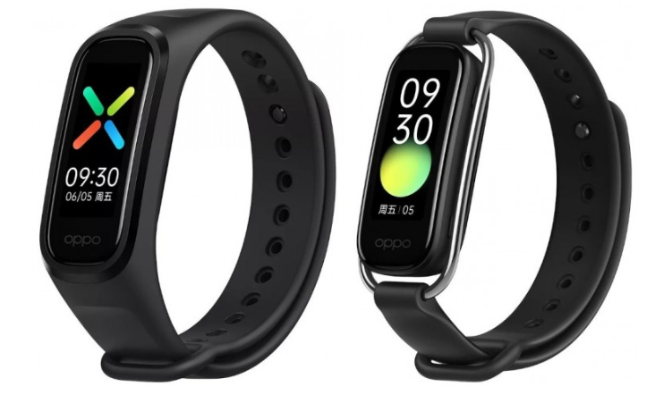

Вместе с новыми смартфонами Reno4 компания OPPO представила пару аксессуаров. Первым стал фитнес-трекер Band с AMOLED-экраном и 14 днями автономной работы. Второй новинкой оказались полностью беспроводные наушники Enco W51 с функцией активного шумоподавления.

OPPO Band выполнен в традиционном форм-факторе «капсулы» с поддержкой разных ремешков. Трекер оснащён 1,1-дюймовым AMOLED-экраном с возможностью выбора одного из более чем 160 предустановленных циферблатов.
Браслет умеет измерять пульс, уровень насыщенности крови кислородом (SpO2), отслеживать качество сна и поддерживает 12 разных типов тренировок. Предусмотрены и все стандартные для подобных устройств функции вроде оповещения о входящих звонках и сообщениях. Гаджет также оснащён модулем NFC. Заявленное время автономной работы составляет 14 дней.
Главной фишкой OPPO Enco W51 является функция активного шумоподавления, для чего каждый наушник оснащён системой из трёх микрофонов. Заявлена возможность снижения уровня внешних шумов до 35 дБ. Кроме того, они имеют небольшую задержку — всего 94 мс.
От одного заряда Enco W51 способны воспроизводить музыку до 4 часов, а с учётом подзарядки от кейса суммарное время автономной работы составляет 24 часа. Чехол поддерживает беспроводную и быструю зарядку.
OPPO Band оценили в $28, а стоимость наушников составляет $70.